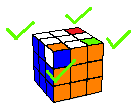

Yellow Cross | Yellow Corners | Middle Layer | White Cross |
White Edges | WHITE CORNERS | Finale
The next step now is to group the white corner pieces with their color groups
We are focusing on these four corner pieces
Scan through to see if any (or all) of them are with their color groups
There are only three possible scenarios to consider:
•One corner piece is in position with its color group
•No corner piece in position with their color groups
•All corner pieces are in position with their color groups

If one is with its color group
Select the face that has the correctly color grouped corner piece at its top right corner
Perform U-R-U’-L’-U-R’-U’-L (To reshuffle the three other corner pieces)
Redo until all four white corner pieces are with their color groups
If none are with their color groups
Select any of the four side faces as a pivot face
Perform U-R-U’-L’-U-R’-U’-L (to get one corner piece with its color group)
Do algorithm for one corner piece with its color group
If all are within their color groups,
Then proceed to the final stage